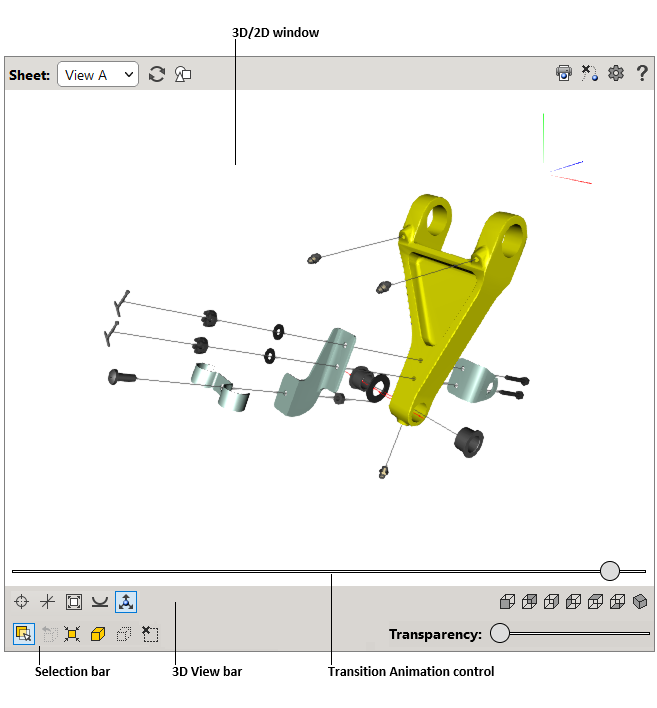

)
for switching between two windows.
)
for switching between two windows.
The user interface of interactive illustration contains two workspaces, 3D and 2D. Each workspace has its own control elements described below. All colors used for the user interface in this document are the default colors.
The illustration can be in the following representations:
)
for switching between two windows.
|  |
The 3D window displays 3D image of the current sheet. You can navigate in the 3D window using the mouse or keyboard. A locator (axis tripod) at the top right corner of the 3D window allows determining the orientation of the 3D model relative to the axes.
The 2D window displays vector and raster images associated with the current sheet.
| User interface | Button | Purpose |
|---|---|---|
| Sheet | Allows you to choose the detail sheet from a list of available sheets. | |
| Reset |

|
Restores the original view on the current sheet. |
| 2D graphics |
|
Allows you to switch between the 2D and 3D windows. The button is available only in the 2D and 3D viewing mode. |
| Print graphics |

|
Allows you to print the current 3D/2D image as displayed in the 3D/2D window. |
| Ignore transparency (for 3D window) |

|
If enabled, allows you to click through the transparent items in the 3D window, as the transparent items become insensitive to the user's click. |
| Restore all (for 3D window) |

|
Shows all hidden and semitransparent objects. |
| Skip animation (for 3D window) |

|
If enabled, allows you to avoid a smooth transition (animation) from one sheet to another and makes the transition between the sheets instant. |
| Settings |

|
Shows or hides the Settings list. Transition animation rate. Adjusts a playback speed for explosion transition. Enable transition animation control. If selected, activates the slider that allows you to manually review transitions between sheets. To display the slider, move the mouse pointer over the bottom of the 3D window or tap it if you have a touch screen. Scene lighting. Defines the number of light sources and their location to illuminate the model in the 3D window. The relative positions of the light sources are displayed to the right of the list. All light sources move with the viewer. Show navigation cube. Shows or hides the Navigation Cube in the 3D window. The Navigation Cube has three different types of hotspot areas: Edge, Corner, and Face. When you position the pointer over the edge, corner, or face of the Navigation Cube, the corresponding area is highlighted. With these areas you can switch between standard views and perform rotations. Show surface edges. If selected, displays surface boundaries in the 3D window. Anti-aliasing. Activates a technique for minimizing the distortion artifacts in the 3D window. Ambient occlusion. Activates ambient occlusion shading and rendering technique in the 3D window. Selection mode. Specifies objects representation for selection in the 3D window. Highlight with color – the selection is highlighted. X-ray selected objects – objects appear gray and translucent, except for the selection. Translucent shell – the outer shell of the entire model appears translucent, non-selected internal objects are hidden. Outline hovered objects. The selection is outlined. |
| Help |

|
Provides a help system for the user interface. |
| Highlighting |
When you select or point to an item in the 3D window or a callout in the 2D window, it is highlighted.
The color scheme can be changed by the illustration author.
The following color scheme is applied by default:
Yellow — for selected item. Green — for pointed callout. |
Buttons for controlling viewing modes in the 3D window.
| User interface | Button | Purpose |
|---|---|---|
| Set center |

|
Allows you to specify the rotation center for the 3D model. |
| Show rotation center |

|
Allows you to hide or show the rotation center. |
| Fit all |

|
Makes the entire 3D model fully visible in the 3D window. |
| Align horizon |

|
Positions the camera's horizontal (but not longitudinal) axis parallel to the horizontal plane in the coordinate system. |
| Show coordinate axes |

|
Shows or hides the orientation axes in the 3D window. |
| Measure |

|
Opens the tool to measure a distance.
In the 3D window, simply click once on one point, then click again on the second point.
The distance between the two red dots should then be displayed.
To get the distance between points projected onto the vertical or horizontal plane, select the projection plane name from the list.
To change the unit of length, select Units.
To set the length of leader lines, drag the H slider.
Select Keep visible to make the dimension line visible after you close the measurement tool.
To set new points, click Clear or press the Esc key, and then specify points in the 3D window.
WARNING Do not use measurement results directly in the workflow as the 3D illustration may differ from the actual product. To obtain the dimensions necessary for manufacturing or servicing, refer to the relevant technical documentation. |
| Section plane |

|
Displays the model as if it were cut by a plane. Use controls to set (Left, Top, Front) and rotate (X and Y) the section plane. To move the section plane, drag the D slider. Use Flip to mirror the section. Select Precise mode to improve the accuracy of the sliders. Select Keep visible to make the section visible after you close the tool. To move the section plane to the center of the selection, click Reset. |
There are several viewing modes that allow showing the 3D model from a specified position:
| User interface | Button | Purpose |
|---|---|---|
| Front |

|
Shows the model from the front. |
| Back |

|
Shows the model from the back. |
| Left |

|
Shows the model from the left side. |
| Right |

|
Shows the model from the right side. |
| Top |

|
Shows the model from the top. |
| Bottom |

|
Shows the model from the bottom. |
| Isometric |

|
Shows the model in an isometric view. |
Allows fitting, showing, hiding and making transparent the items selected in the 3D window.
| User interface | Purpose |
|---|---|
| Show selected objects in separate window | If enabled, displays the selection in the secondary 3D window. |
| Ignore transparency | If enabled, allows you to click through the transparent items in the 3D window, as the transparent items become insensitive to the user click. |
| Restore all | Shows all hidden and semitransparent objects. |
| Fit | Fits the bounding box of the selected items to the 3D window. |
| Show | Makes visible the selected items previously hidden in the 3D window. |
| Hide | Hides the selected items in the 3D window. |
| Select none | Deselects all items. |
| Transparency | Allows you to set the transparency value for the selected items. The Transparency command is available if one or more items are selected in the 3D window. |
Right-click in the window to access the context-sensitive menus.
| User interface | Meaning |
|---|---|
| Show all | Makes all hidden items visible in the 3D window. |
| Zoom in | Increases the image. |
| Zoom out | Decreases the image. |
| Best fit | Fits the image to the margin bounds. |
| Help | Provides a help system for the user interface. |
| About | Shows the versions of publication, 3D viewer and 2D viewer. |
Right-click in the 2D window to access the available context-sensitive commands.
| Operation | User action |
|---|---|
| Select an item callout | Click the required callout. |
| Pan | Move the mouse while holding down its left button. |
| Zoom | Rotate the mouse wheel forward or backward. |
| Operation | User action |
|---|---|
| Select an item | Click the required item. |
| Select several items one by one | Press and hold down CTRL, and then click each required 3D item. |
| Zoom in/out | Rotate the mouse wheel forward or backward. On Apple computers, use the Control modifier key. |
| Pan | Move the mouse with the mouse wheel pressed. On Apple computers, use the Option modifier key. |
| Spin | Move the mouse while holding down its left button. |
| Set rotation center |
On the 3D View bar, click
Set center
, and then click the required item in the 3D
window.
Or holding down the ALT key, click any item in the 3D window. |
| Fit 3D model |
On the 3D View bar, click
Fit
.
|
| Fit selected items | Select the required items in the 3D window or DPL table, and then click Fit on the Selection bar. |
| Show 3D model from specified position |
On the 3D View bar, click the required button
( Front,
Back,
Left,
Right,
Top,
Bottom, and
Isometric).
|
| Hide/Show a group of items | Press and hold down CTRL, click each required 3D item, and then use the Hide and Show buttons on the Selection bar. |
| Set transparency/opacity | Select the required item in the 3D window, and then drag the transparency slider on the Selection bar, until the desired effect is achieved in the 3D window. |